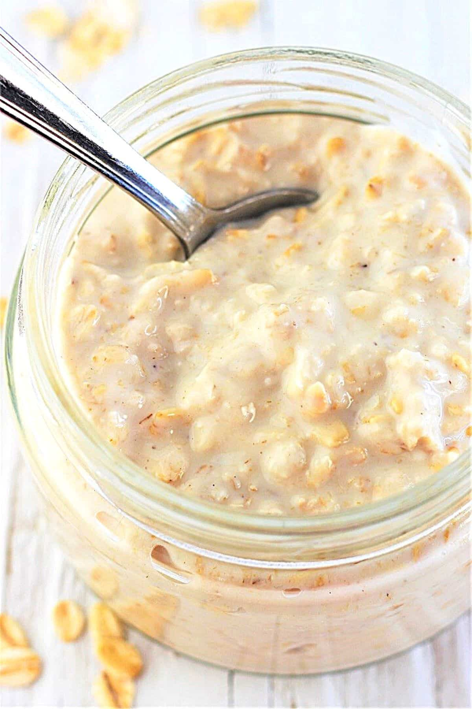

Overnight Oats

A popular new trend overnight oats are as simple as the name implies.
Ingredients
- Oats, Old-fashioned oats work best
- Milk, cows milk works best
Cooking Steps
- Measure out oats using measuring cups. For this example we measure out 1/2 a cup of dry Old Fashioned oats.
- Measure out an equal amount o milk. For this example 1/2 of a cup.
- Combine both ingredients in an airtight container, we used a mason jar but you can use any sealable food safe container.
- Place the container into the fridge and wait at least 8 hours for it to soften.
- Enjoy, top with fresh fruit, peanutbutter, nuts, or any sweetener you enjoy.